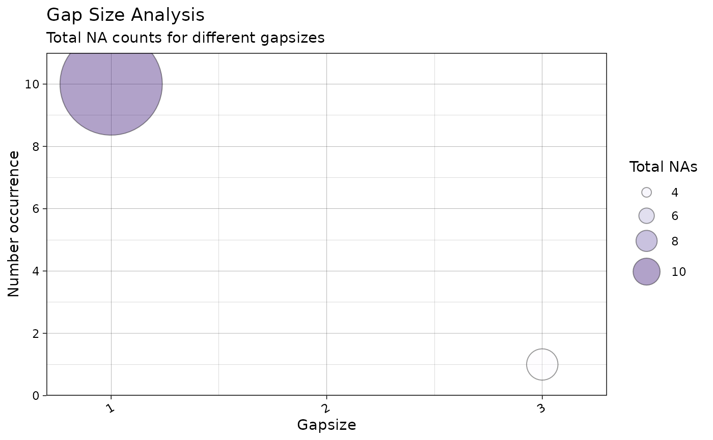
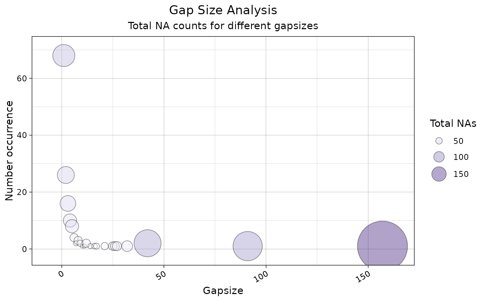
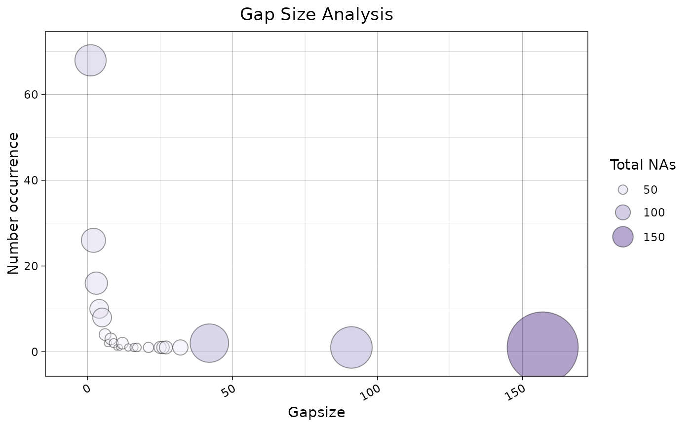
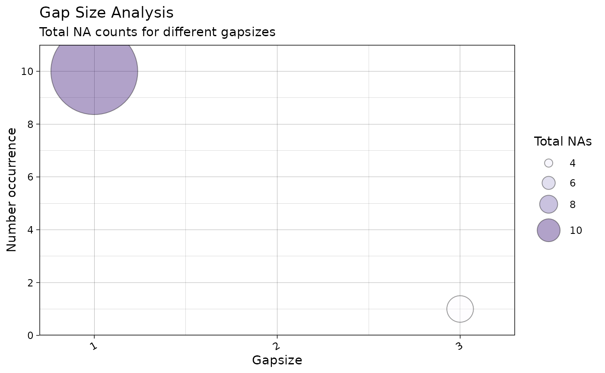
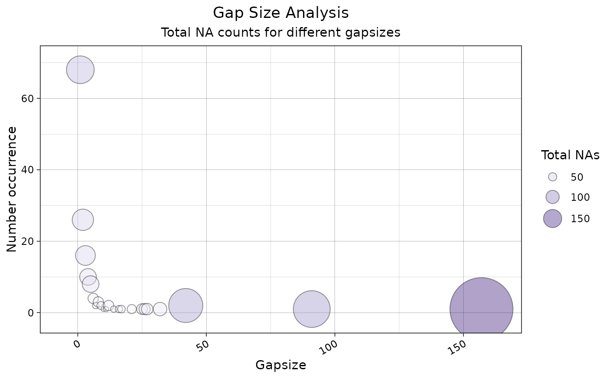
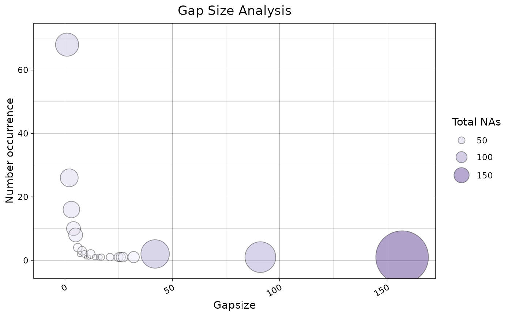

Bubble Plot to Visualize Total NA Count of NA gap sizes
Source:R/ggplot_na_gapsize2.R
ggplot_na_gapsize2.RdVisualize the total NA count (gap size * occurrence) for the existing gaps sizes (NAs in a row).
ggplot_na_gapsize2(
x,
colors_bubbles = c("#FCFBFF", "#EFEEFA", "#DDDAEF", "#C8C3E2", "#B1AAD4", "#9A8FC4",
"#8273B5", "#6B56A7", "#553695", "#3D1778"),
color_border = "black",
alpha_bubbles = 0.4,
labels_bubbles = "none",
size_bubbles = 25,
min_totals = NULL,
min_occurrence = NULL,
min_gapsize = NULL,
max_gapsize = NULL,
title = "Gap Size Analysis",
subtitle = "Total NA counts for different gapsizes",
xlab = "Gapsize",
ylab = "Number occurrence",
legend = TRUE,
legend_breaks = 4,
legend_title = "Total NAs",
legend_position = "right",
legend_point_sizes = "default",
theme = ggplot2::theme_linedraw()
)Arguments
- x
Numeric Vector (
vector) or Time Series (ts) object containing NAs. This is the only mandatory parameter - all other parameters are only needed for adjusting the plot appearance.- colors_bubbles
Choose a color gradient that encodes lower to higher total NA counts. Color codes can be given as vector. Using color palettes from colorspace, grDevices, RColorBrewer or other packages is useful here. E.g. grDevices::heat.colors(10) would be a possible input.
- color_border
Color for the border of the bubbles.
- alpha_bubbles
Alpha (transparency) value used for filling the bubbles.
- labels_bubbles
Should labels be added to the individual bubbles inside the plot. For many datasets there will be overplotting issues once labels are added. In these cases using the min_gapsize, min_totals or min_occurrence options might be useful to only display the most relevant gap sizes.
You can choose between these labels to be added:
"none" - No label gets added to the bubbles (default choice)
"gap" - Adds a label displaying the gap size belonging to the respective bubble
"total" - Adds a label displaying the total NA count for the respective bubble
"gap-occurrence" - Adds a label displaying the respective gap size and number of its occurrence
The default setting is "none".
- size_bubbles
Allows to scale the size of the bubbles. Some experimenting with this parameter might be needed to get a good visualization for your specific dataset.
- min_totals
Only print bubbles for gap sizes that account for at least min_totals NAs in the time series.
- min_occurrence
Only print bubbles for gap sizes that occur at least min_occurrence times in the time series.
- min_gapsize
Only show gap sizes larger than min_gapsize. Together with max_gapsize enables zooming into in certain regions of interest.
- max_gapsize
Only show gapsizes smaller than max_gapsize. Together with min_gapsize enables zooming into in certain regions of interest.
- title
Title of the Plot.
- subtitle
Subtitle of the Plot.
- xlab
Label for x-Axis.
- ylab
Label for y-Axis.
- legend
If TRUE a legend is added on the right side
- legend_breaks
Number of displayed breaks / labels in the legend. Needs an integer giving the desired number of breaks as input. Breakpoints are internally calculated by R's pretty() function, which can also lead to values slightly smaller or larger than the desired number.
- legend_title
Defines the title of the legend.
- legend_position
Defines position of the legend. Choose either 'bottom', right', 'left' or 'top'.
- legend_point_sizes
Defines the size of the symbols representing the total NA bubbles in the legend.
You can choose between "default", "actual" or a custom vector of sizes.
"default" - Scales the points in the legend to symbolically resemble the size differences (default choice)
"actual" - Scales the points in the legend according to their actual size in the plot
Since these two options are not be always sufficient, a custom vector of sizes can be used as input. This would look like this: c(4,5,6,7). Be aware, that the length of this vector must match the number of breakpoints (can be adjusted with legend_breaks).
- theme
Set a theme for ggplot2. Default is ggplot2::theme_linedraw(). (
theme_linedraw)
Value
The output is a ggplot2 object that can be
further adjusted by using the ggplot syntax
Details
This function visualizes total NA counts by individual gap size (consecutive NAs) in a time series. The bubble plot makes it easy to see which gap sizes account for most of the NAs in the series. The size and color of the bubbles represent the total number of NAs a given gap size accounts for.
Total NAs for a gap size are calculated as follows: total NAs = occurrence * gap length
For example, interpret a bubble for gap size 2 as follows: a 2-NA gap (two NAs in a row) occurred 27 times in the time series and thus accounts for 54 total NAs.
On the x-axis, the different gap sizes are plotted in increasing order. The y-axis shows the occurrence count of these gap sizes in the time series.
The plot is useful for investigating possible root causes of the missing data. It can indicate whether the missing data are random or whether there are patterns of interest.
Depending on the input time series, there might be too much information in
the plot, leading to overplotting. In these cases, use the parameters
min_totals, min_occurrence, and min_gapsize to display
only the information of interest.
The only required parameter is x (the univariate time series with NAs
to visualize). All other parameters alter the appearance of the plot.
As long as the input is univariate and numeric, the function also accepts
data.frame, tibble, tsibble, zoo, or xts
input.
The plot can be adjusted via function parameters. For more complex adjustments, you can modify the result using ggplot2 syntax, since the function returns a ggplot2 object. See the Examples for typical adjustments.
Examples
# Example 1: Visualize total NA counts in tsNH4
ggplot_na_gapsize2(tsNH4)
# Example 2: Visualize total NA counts in tsNH4, different color gradient
ggplot_na_gapsize2(tsNH4, colors_bubbles = rev(grDevices::heat.colors(10)))
# Example 3: Same as example 1, just written with pipe operator
tsNH4 %>% ggplot_na_gapsize2()
 # Example 4: Visualize total NA counts in tsHeating
# Limited to gap sizes that account for a total of > 600 NAs
ggplot_na_gapsize2(tsHeating, min_totals = 600)
# Example 5: Visualize total NA counts in tsNH4 - no legend
ggplot_na_gapsize2(tsNH4, legend = FALSE)
# Example 6: Visualize total NA counts in tsAirgap - increased bubble size
ggplot_na_gapsize2(tsAirgap, size_bubbles = 35)

# Example 7: Visualize total NA counts in tsNH4
# Plot adjustments via ggplot_na_gapsize2 function parameters
ggplot_na_gapsize2(tsNH4, theme = ggplot2::theme_classic())
# Example 8: Visualize total NA counts in tsNH4 - title, subtitle in center
# Plot adjustments via ggplot2 syntax
ggplot_na_gapsize2(tsNH4) +
ggplot2::theme(plot.title = ggplot2::element_text(hjust = 0.5)) +
ggplot2::theme(plot.subtitle = ggplot2::element_text(hjust = 0.5))

# Example 9: Visualize total NA counts in tsNH4 - title in center, no subtitle
# Plot adjustments via ggplot2 syntax and function parameters
ggplot_na_gapsize2(tsNH4, subtitle = NULL) +
ggplot2::theme(plot.title = ggplot2::element_text(hjust = 0.5))

# Example 10: Total NA counts in tsNH4 - legend on the bottom and color change
# Plot adjustments via ggplot2 syntax and function parameters
ggplot_na_gapsize2(tsNH4, colors_bubbles = grDevices::heat.colors(10)) +
ggplot2::theme(legend.position = "bottom")
# Example 4: Visualize total NA counts in tsHeating
# Limited to gap sizes that account for a total of > 600 NAs
ggplot_na_gapsize2(tsHeating, min_totals = 600)
# Example 5: Visualize total NA counts in tsNH4 - no legend
ggplot_na_gapsize2(tsNH4, legend = FALSE)
# Example 6: Visualize total NA counts in tsAirgap - increased bubble size
ggplot_na_gapsize2(tsAirgap, size_bubbles = 35)

# Example 7: Visualize total NA counts in tsNH4
# Plot adjustments via ggplot_na_gapsize2 function parameters
ggplot_na_gapsize2(tsNH4, theme = ggplot2::theme_classic())
# Example 8: Visualize total NA counts in tsNH4 - title, subtitle in center
# Plot adjustments via ggplot2 syntax
ggplot_na_gapsize2(tsNH4) +
ggplot2::theme(plot.title = ggplot2::element_text(hjust = 0.5)) +
ggplot2::theme(plot.subtitle = ggplot2::element_text(hjust = 0.5))

# Example 9: Visualize total NA counts in tsNH4 - title in center, no subtitle
# Plot adjustments via ggplot2 syntax and function parameters
ggplot_na_gapsize2(tsNH4, subtitle = NULL) +
ggplot2::theme(plot.title = ggplot2::element_text(hjust = 0.5))

# Example 10: Total NA counts in tsNH4 - legend on the bottom and color change
# Plot adjustments via ggplot2 syntax and function parameters
ggplot_na_gapsize2(tsNH4, colors_bubbles = grDevices::heat.colors(10)) +
ggplot2::theme(legend.position = "bottom")